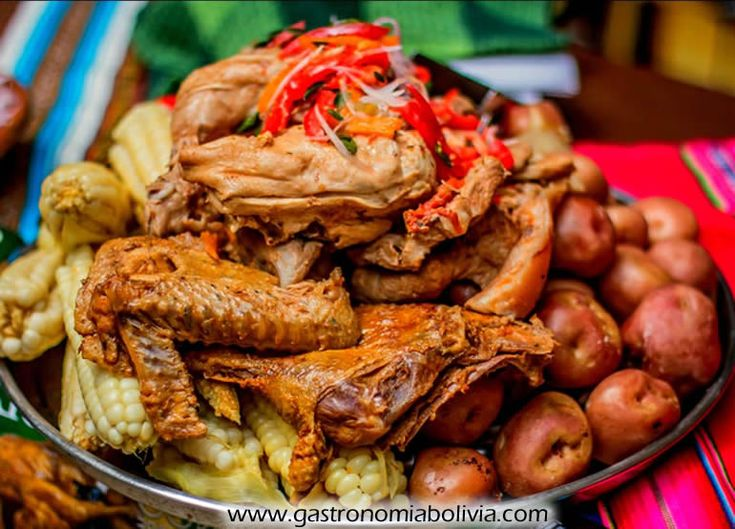
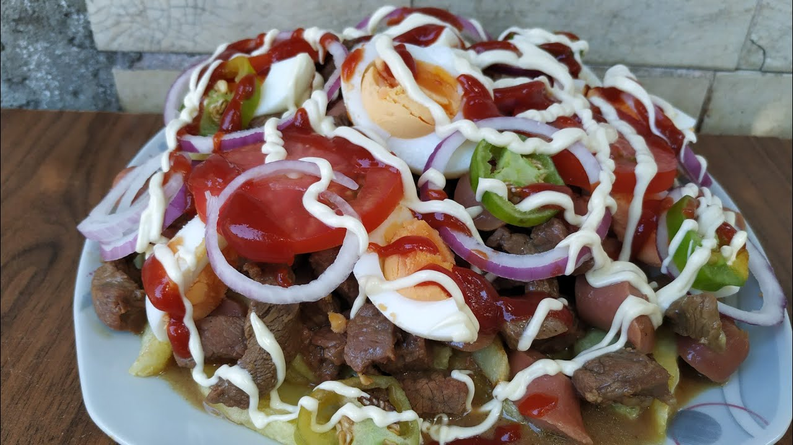

Pampaku
Se trata de un plato hecho a base de:
- Carne de pollo
- Carne de res
- Carne de cordero
- Papa
- Camote
- Yuca
- Platano
- Papa
- Carne
- Chorizo
- Huevo
- Ensalada
- Arroz
- Papa
- Huevo
- Carne
- Pan
- Y una ensalada
Todos estos ingredientes son colocados en un recipiente herméticamente cerrado y enterrado en una fosa, la que es recubierta con piedras y ladrillos, previamente calentados mediante fuego de leña o carbón, al grado de reventar la piedra. Se cubre con hojas frescas de hierba u hojas de plátano, y luego es tapado completamente con barro. El punto de cocción se produce cuando se resquebraja y sale humo de la hierba fresca quemada. Se sirve acompañado con ensalada de verduras frescas.

Pique Macho
Este es quizá el plato mas icónico de Cochabamba, consiste en carne de res "lomito" cortado en trozos pequeños, cocidos y salteados con especias para darle sabor, chorizo, loco y cebolla, papas fritas, huevo duro y en algunos casos no tan populares aceitunas. Un plato muy picante infaltable en la mesa de los cochabambinos. Esta compuesto por:

Silpancho
Un plato muy simple que consiste en carne, huevo, arroz, papas y ensalada, lo peculiar de este plato es la carne, que muchas veces es carne de res "martajada" golpeada hasta expandir su tamaño, para hacer una idea básica digamos que la carne suele ser igual o mas grande que el plato en el que se sirve.

Trancapecho
La trancapecho es una comida rica y sabrosa, esta compuesto por: